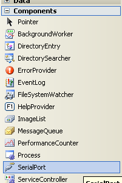
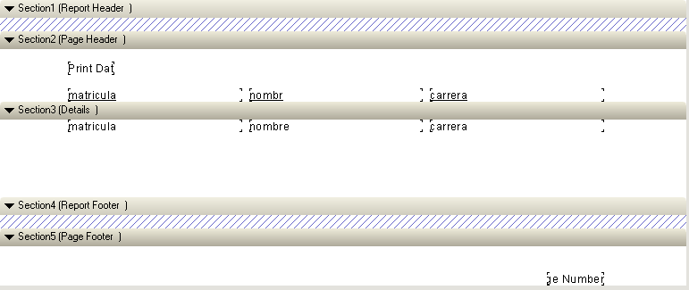
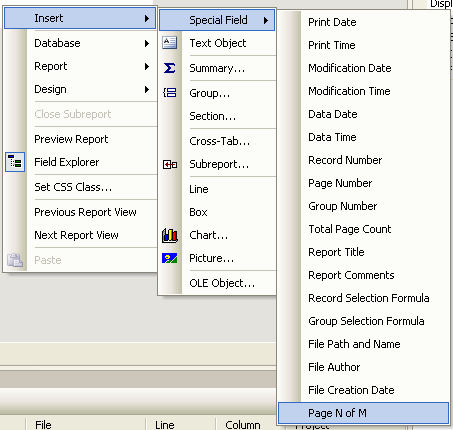
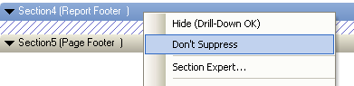
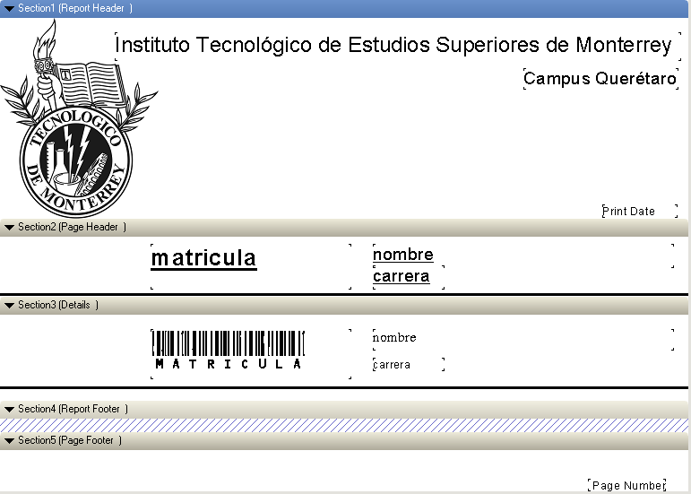
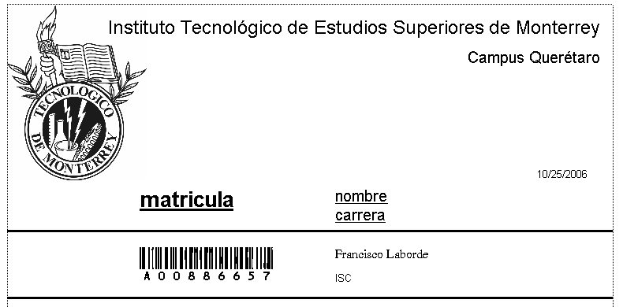

Laboratorio 18: Uso de código de barras

El uso del código de barras como dispositivo de entrada es cada vez más frecuente en virtud de que reduce de manera importante tanto el tiempo de captura como las posibilidades de error.
Para poder utilizar esta tecnología, es necesario que los elementos a reconocer tengan impresos los códigos, los cuales deben cumplir determinados estándares que hacen posible el reconocimiento.
Los lectores pueden ser programados para recibir diferentes codificaciones y a través de alguna interfaz, envían el resultado a la computadora. Sería muy complicado poner grandes cantidades de información codificada en barras, por lo que el uso más frecuente consiste en establecer un número que se utiliza como llave o elemento de búsqueda para realizar consultas a una base de datos en la que se mantiene información relacionada con el número que se codifica.

Objetivos
En esta práctica utilizaremos el lector de código de barras para reconocer un alumno y recuperar datos relacionados con dicho alumno de la base de datos.
Para su realización, se han simplificado algunos elementos:Se asume que se utilizará el código de barras estandarizado que utilizan la mayor parte de los proveedores de bienes de consumo para vender a las grandes cadenas de minoristas, por lo que no entraremos en detalles sobre la programación del lector de código de barras.
Crea un nuevo proyecto de Visual Basic del tipo Windows Application , y agrega el modUtil a tu proyecto.
Primero vamos a crear una aplicación que nos permita leer de un puerto serial y mostrar lo que fue leído en un MessageBox. Al crear la forma agrega un control SerialPort que se encuentra en la pestaña Components.
Cámbiale el nombre a spPort y agrega el siguiente código a la forma:
Private Sub Form1_Disposed(ByVal sender As Object, ByVal e As System.EventArgs) _ Handles Me.Disposed spPort.Close() End Sub Private Sub Form1_Load(ByVal sender As System.Object, ByVal e As System.EventArgs) _ Handles MyBase.Load spPort.Open() End Sub Private Sub spPort_DataReceived(ByVal sender As Object, ByVal e As System.IO.Ports.SerialDataReceivedEventArgs) _ Handles spPort.DataReceived MsgBox(spPort.ReadLine()) End SubFíjate que este código maneja tres eventos. Al iniciar la aplicación abrimos el puerto del lector de código de barras. Al terminar la aplicación lo estamos cerrando y cuando recibimos datos con el lector de código de barras mostramos lo que fue leído en un MessageBox.
Agrega un TextBox en el que se mostrará el código leído.
El lector de código de barras debe de estar esperando datos todo el tiempo, para que en el momento en que se lean datos dispare el evento DataReceived. Esta manera de manejar el lector tiene como ventaja que el tiempo de respuesta del lector va a ser muy pequeño, pero tiene como desventaja que la aplicación no va a responder porque se va a bloquear al intentar leer el código de barras.
Para solucionar este problema Microsoft decidió que en Visual Studio 2005 el lector de código de barras se manejara como un Thread aparte, con lo que tenemos la ventaja del corto tiempo de respuesta del lector y tenemos la ventaja de una aplicación responsiva.
No es objetivo del curso entender Threads, por lo que el siguiente código podría no tener mucho sentido, lo que está haciendo el código es invocando un Helper, que es una clase que se encarga de modificar datos u objetos de un Thread desde otro Thread. Todo esto es necesario porque si todos los Threads pudieran acceder a los controles podríamos tener problemas de integridad (dos Threads actualizando un campo de texto al mismo tiempo).
Cambia la función DataReceived que teníamos por la siguiente:
Private Sub spPort_DataReceived(ByVal sender As Object, ByVal e As System.IO.Ports.SerialDataReceivedEventArgs) _ Handles spPort.DataReceived Dim leido As String = spPort.ReadLine() leido = leido.Remove(leido.Length - 1) If txtCodigoLeido.InvokeRequired Then Dim d As New SetTextCallback(AddressOf setMatricula) Me.Invoke(d, New Object() {leido}) Else txtCodigoLeido.Text = leido End If End SubEste método necesita una función delegada llamada SetTextCallback y necesita una función (que es la que se va a ejecutar) llamada setMatricula. Puedes cambiar el nombre de las funciones a cualquier otro nombre que tenga más sentido para tu aplicación. A continuación vamos a agregar estas dos funciones:
Delegate Sub SetTextCallback(ByVal [text] As String)Private Sub setMatricula(ByVal text As String) 'Agrega el código necesario para asignar el código leído en la caja de texto End SubLa función setMatricula va a recibir como texto lo que haya leído el lector de código de barras y debe ponerlo en la caja de texto que agregamos.
Crea en tu esquema de usuario de SQLServer la tabla alumnos que incluya los siguientes columnas:
- Matrícula
- Nombre
- Carrera
Agrega a tu forma dos cajas de texto (una para cada campo faltante) y complementa el código para que al leer el código de barras, tanto con la lectora como con el teclado, se recuperen los datos del producto de la tabla y se muestren en las cajas de texto correspondientes. (Puedes usar la rutina showData).
Prueba el programa agregando a la tabla algunos alumnos. ¡Puedes usar tu credencial para probar el funcionamiento de tu aplicación!
Agrega a tu aplicación un reporte (CrystalReport) para imprimir "etiquetas" para los productos con su código de barras asociado.
Utiliza para este efecto la siguiente fuente:
Para instalarla, baja el archivo al disco local y cópiala a la carpeta:
C:\Windows\Fonts\El nombre con que Windows reconoce esta fuente es: C39HrP36DmTt Esta fuente permite imprimir cadenas en código 3 de 9, las cuales para ser reconocidas por los lectores deben iniciar y terminar con un asterisco, es decir, la cadena impresa debe ser de la forma:
*código a mostrar*
Se recomienda usar un tamaño de al menos 24 puntos para legibilidad de los dígitos visibles y asegurar el reconocimiento de la lectora.
Prueba la siguiente consulta:
SELECT ('*' + matricula + '*') AS matricula, nombre, carrera FROM alumnos¿Qué te devuelve? Comprueba que los productos en el reporte son reconocidos por tu aplicación de lectura de código de barras.
Cuando aparece la pantalla del reporte vamos a tener algo similar a la siguiente pantalla. Este reporte es adecuado en algunos casos, pero es muy poco vistoso. Para hacerlo un poco mejor hay varias cosas que podemos hacer.
- Podemos seleccionar cualquiera de las cajas y cambiarlas de lugar
- Podemos seleccionar cualquiera de las cajas y cambiar algunas propiedades como el tipo de letra, si es negrita, si está subrayada, si está tachada, etc. mediante la propiedad Font (las propiedades se encuentran a la derecha, al igual que en la vista de diseño en VB.Net)
- En las cajas que se encuentran en la sección de detalles (las que representan campos de la base de datos) hay varias opciones útiles al reportar. DecimalPlaces nos permite indicar cuántos números decimales deben imprimirse en el reporte, DateOrder nos permite reportar en diferentes formatos de fecha (dd/MM/yyyy, MM/dd/yyyy, etc.), DateFirstSeparator y DateSecondSeparator nos permiten cambiar el separador de fechas (23-09-85 o 23/09/85 o 23-09/85), ThousandsSeparator permite separar números grandes con algún símbolo, etc.

Podemos agregar nuevos campos especiales haciendo click derecho sobre alguna parte del reporte y seleccionando la opción Insert. Entre las cosas que vale la pena mencionar
- Campos Especiales: Se puede agregar la fecha, la hora, el autor, el número de hoja, etc.
- Objeto de Texto: Para poner un campo en donde se pueda escribir
- Line y Box: Insertar líneas y cajas. Son útiles cuando queremos agrupar o separar información.
- Chart: Insertar gráficas
- Picture: Insertar imágenes
Otra cosa importante es que al crear por primera vez el reporte no tiene ni encabezado ni final. Para activar estas secciones podemos hacer click derecho sobre el encabezado y seleccionar Don't Suppress
Experimenta qué otros cambios puedes hacer hasta que el reporte quede a tu gusto. El siguiente es un layout sugerido para los reportes.
Así es como se ve una vez que ya está reportado:


La calificación de esta actividad es de
carácter individual.
Envía el laboratorio por este medio , archivo lab18 + matricula.zip.